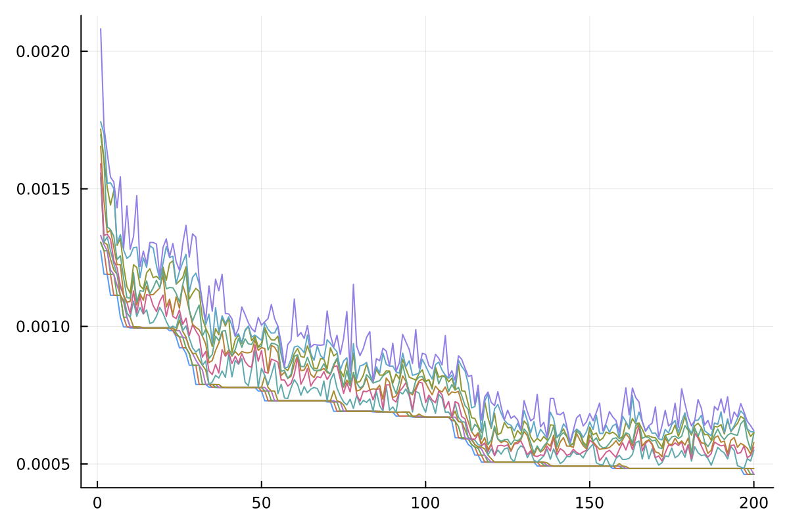
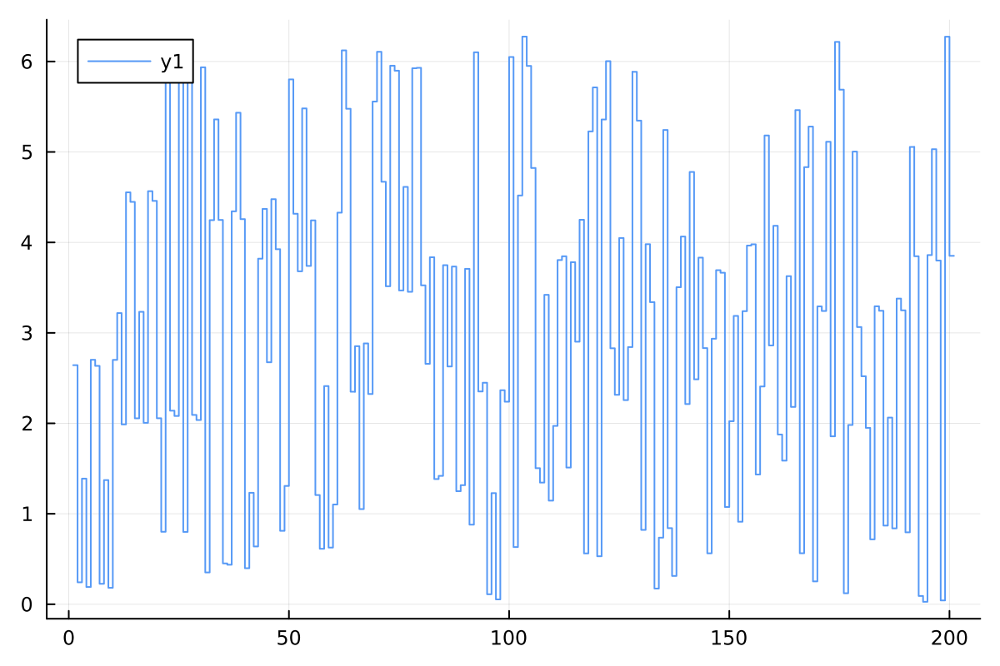
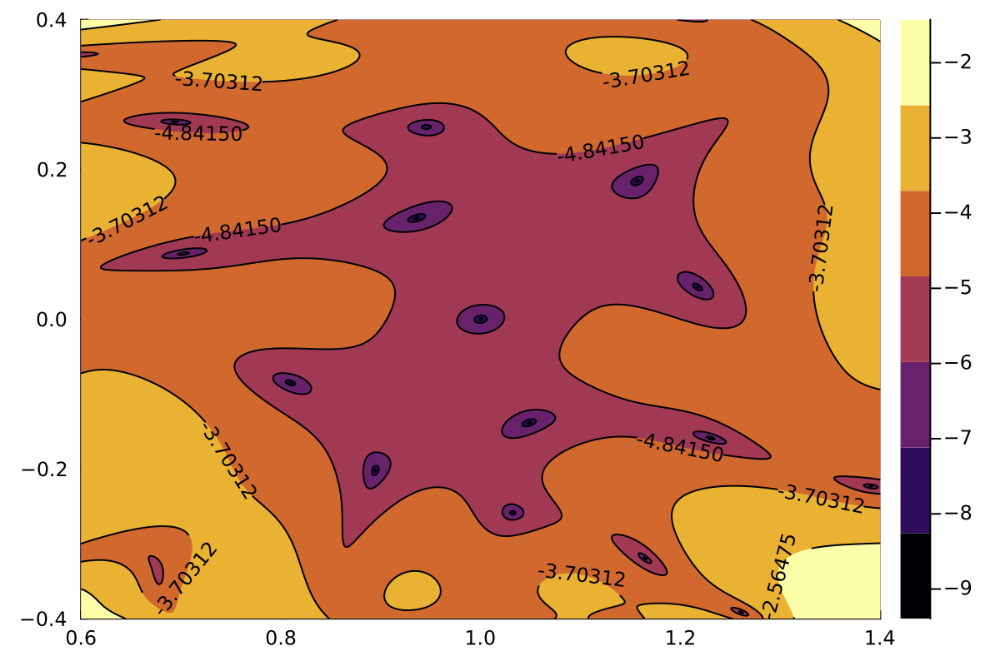
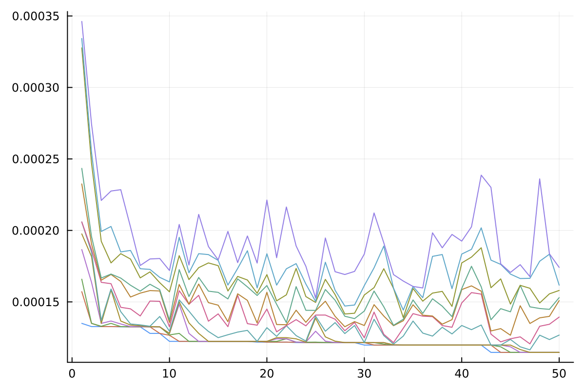
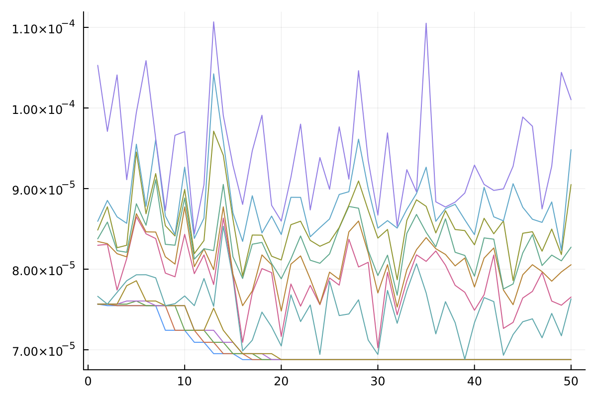
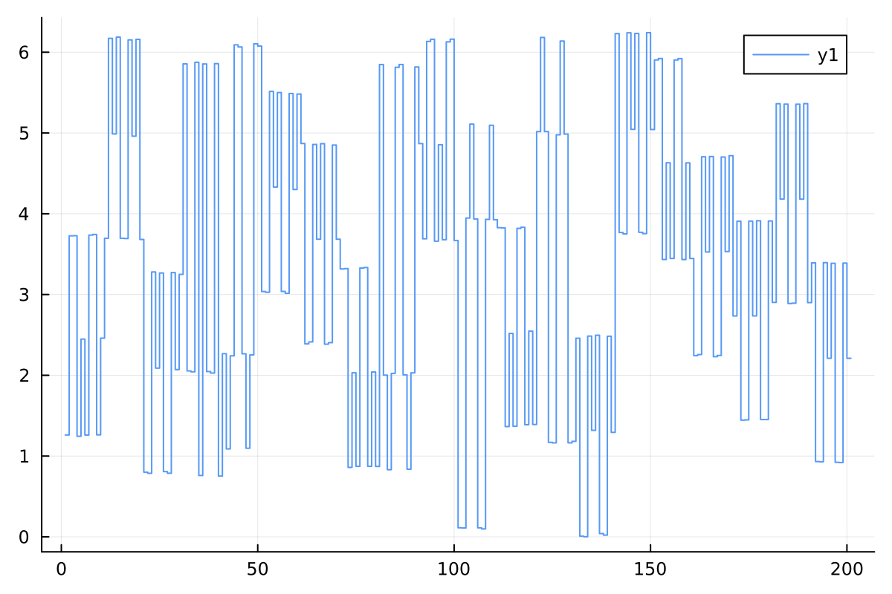
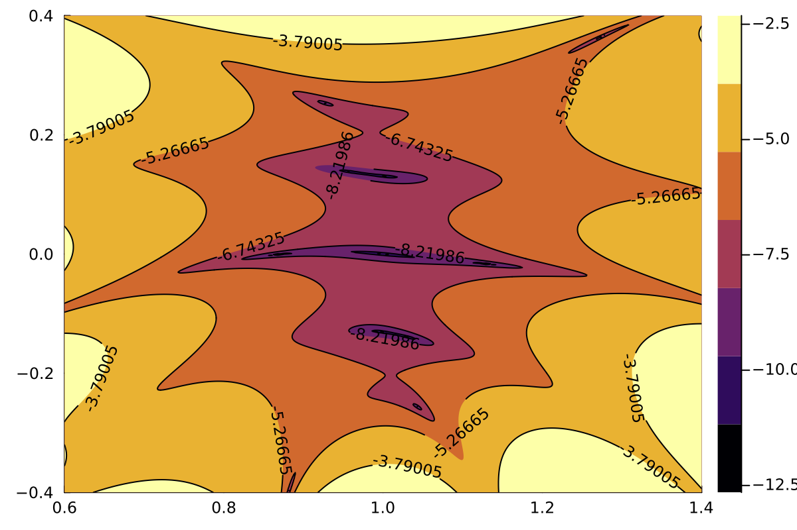

User Manual
This page contains everything most users will need to know.
Basic Use
Optimization Parameters
All parameters defining an optimization are stored in an OptimizationParameters object with reasonable default values. See Background Details below for further explanations of these parameters.
UTrack.OptimizationParameters — TypeOptimizationParametersStores all parameters that define an optimization. This uses the @with_kw macro, so one only has to provide parameters that differ from the given default: OptimizationParameters(NSteps=6). Note that NSteps must be even when using π-pulses.
Fields
| Field | Type | Default | Description |
|---|---|---|---|
| Rabi | Float64 | 1.0 | Rabi frequency of the system in rad/s |
| Δt | Float64 | π | Time step in seconds, defaults to π-pulses |
| NSteps | Int64 | 10 | Number of pulse phases per cycle |
| NCycles | Int64 | 40 | Number of cycles |
| Detuning | Float64 | 0.4 | Maximum detuning / Rabi |
| RabiFDev | Float64 | 0.4 | Maximum amplitude deviation / Rabi |
| NDet | Int64 | 64 | Number of points along the detuning axis |
| NRab | Int64 | 64 | Number of points along the amplitude deviation axis |
| sigDet | Float64 | 0.3 | Weight Gaussian parameter for robustness range of detuning |
| sigRab | Float64 | 0.3 | Weight Gaussian parameter for robustness range of amplitude deviation |
| gradTol | Float64 | 1e-12 | Terminate GRAPE when gradient is smaller than tolerance |
| maxIter | Int64 | 10,000 | Terminate GRAPE after number of iterations |
| NPulses | Int64 | 12 | Number of pulses in population |
| NGens | Int64 | 10 | Number of full pulse generations |
| NGensXUR | Int64 | 10 | Number of XUR generations |
Performing Optimizations
Once the parameters have been defined, the optimization can be run using new_optimization. Interrupted optimizations can be restarted using continue_optimization.
UTrack.new_optimization — Functionnew_optimization(folder::AbstractString, params::OptimizationParameters)Starts new optimization based on OptimizationParameters params in folder. The folder will be created, so it may not exist, but its direct parent folder has to exist, see Base.Filesystem.mkdir.
UTrack.continue_optimization — Functioncontinue_optimization(folder::AbstractString)Continue optimization started in folder. Use this if the optimization started using new_optimization was interrupted.
Optimization Output
While the optimization prints some progress information to standard output, all important output is stored in the given folder.
More information on how to read and write this data, see Persistence Functions.
Parameters
The parameters are stored as a JSON file in parameters.json. Don`t change the file after its creation.
Final and Intermediate Pulses
The pulses of each generation are stored in a CSV file, where each column represents one pulse consisting of a sequence of phases, and the pulses are ordered by their objective function value (the first pulse is the best one). The pulses of the cycle based optimization are stored in pulses/optimization-cycle/generations/gen-x.csv, where x stands for the generation. For the full optimization the files are pulses/optimization-full/generations/gen-x.csv.
The best pulse of the last generation is stored in a Matlab file pulses/final/optimal-pulse.mat and a CSV file pulses/final/optimal-pulse.csv.
Moreover, the optimal pulse is plotted in full plots/final/full-pulse.pdf, and each cycle individually plots/final/pulse-cycles/cycle-x.pdf.
The cost profile of the final pulse is plotted in plots/final/cost-profile.pdf.
Optimization Traces
The traces of the GRAPE optimizations are stored in plots/optimization-cycle/generations/gen-x.pdf and plots/optimization-full/generations/gen-x.pdf.
The traces of the genetic algorithm are stored in plots/optimization-cycle/evolution.pdf and plots/optimization-full/evolution.pdf.
Background Details
The controlled Hamiltonian of the single qubit system is
$H = \Omega\big( (1+\Delta\Omega)( \cos(\phi(t))\frac{\sigma_x}{2} + \sin(\phi(t))\frac{\sigma_y}{2} ) + \delta\frac{\sigma_z}{2} \big)$
where $\sigma_x,\sigma_y,\sigma_z$ denote the Pauli operators. $\Omega$ denotes the Rabi frequency in rad/s (parameter Rabi), $\Delta\Omega$ denotes the maximum amplitude deviation relative to the Rabi frequency (parameter RabiFDev), and $\delta$ denotes the maximum detuning relative to the Rabi frequency (parameter Detuning).
We assume that the pulse phase $\phi(t)$ is piecewise constant on time intervals of length given in parameter Δt. The total time duration of the pulse is Δt*NSteps*Ncycles.
The cost functional is the infidelity of the final propagator with the identity matrix (up to global phase) averaged over the range of amplitude deviations and detunings, and tracked over the $N$ cycles (parameter Ncycles) of the pulse:
$C[\phi] = \tfrac1N \sum_{n=1}^N \sum_{m=1,k=1}^{M,K}w_{m,k} \big(1-\tfrac14|\operatorname{tr}(U_{\delta_k,\Delta\Omega_m}(n\cdot s\Delta t))|^2\big)$
A pulse with a low cost function value will refocus the state after every $s$ (parameter NSteps) time steps. The number of amplitude deviations and detunings ($M,K$) is set in parameters NRab and NDet, and the weights follow a Gaussian distribution with standard deviation sigRab and sigDet respectively.
The full pulse optimization uses the GRAPE algorithm to efficiently compute the gradient of the cost function with respect to the pulse phases, and then updates the pulse using standard optimization algorithms (typically BFGS and LBFGS). The optimization can be controlled using parameters gradTol and maxIter.
Since this is a local optimization algorithm for a highly non-convex cost function, the result strongly depends on the initial state. To turn this into a global optimization algorithm, we optimize a population of pulses (parameter NPulses) over several generations (parameter NGens) using a genetic algorithm. As shown below, starting from random initial pulses, the optimized pulses have the structure similar to UR pulses, but more general. We call such pulses "XUR pulses", and use these pulses as initial sequences to accelerate the optimization. Moreover we can restrict the optimization to the subset of XUR pulses by applying GRAPE only to the overall phase of each pulse cycle. The number of such generations is given in the parameter NGensXUR.
Example Optimizations
Here we provide two example optimizations, and at the same time illustrate the efficiency of the approach.
Full Pulse Optimization
First we want to optimize a pulse of 20 cycles with 10 $\pi$-pulses each. We will only use full pulse optimization (NGensXUR=0). For the genetic algorithm we use a population size of 12 pulses evolved over 200 generations. We use the function new_optimization_no_xur to start from random pulses without XUR structure for illustration purposes, usually this is not recommended.
julia> p = OptimizationParameters(NGens=200, NPulses=12, NCycles=20, NSteps=10, NGensXUR=0)
julia> UTrack.new_optimization_no_xur("examples/G10x20",p)
0 1.3057586604e-03 1.3176448879e-03 1.5025900487e-03 1.557e-03 1.594e-03 1.742e-03 1.793e-03 1.867e-03 1.869e-03 1.881e-03 ..
1 1.2749222784e-03 1.3057586604e-03 1.3057586604e-03 1.331e-03 1.542e-03 1.557e-03 1.591e-03 1.655e-03 1.697e-03 1.717e-03 ..
...
199 4.6212317925e-04 4.6212317925e-04 4.6232470660e-04 4.834e-04 4.834e-04 5.105e-04 5.310e-04 5.360e-04 5.511e-04 5.999e-04 ..
200 4.6212317924e-04 4.6212317925e-04 4.6212317925e-04 4.623e-04 4.834e-04 5.497e-04 5.606e-04 5.784e-04 6.118e-04 6.143e-04 ..Plotting the cost of each pulse throughout the 200 generations we get the following plot:

The best pulse of the final generation looks as follows:

One can observe that the cycles of this pulse are similar to cycles of UR10, up to overall phase shift, potential sign flip, and cyclic shift of the $\pi$-pulses. This will be exploited in the next example.
Moreover we obtain a plot of the cost profile, i.e. the cost function value over the detuning and amplitude deviation range:

Speedup using Cycle Optimization
In the second optimization we make use of the observed structure in optimized pulses. We start by optimizing over XUR pulses for 50 generations (NGensXUR=50), followed by another 50 generations of full pulse optimization.
julia> p = OptimizationParameters(NGens=50, NPulses=12, NCycles=20, NSteps=10, NGensXUR=50)
julia> UTrack.new_optimization("examples/G10x20-xur",p)
0 2.0591681253e-04 2.5985502078e-04 2.9424615385e-04 3.277e-04 3.491e-04 3.760e-04 5.896e-04 6.198e-04 6.290e-04 6.855e-04 ..
1 1.3499432152e-04 1.5716606934e-04 1.6589249016e-04 1.866e-04 1.976e-04 2.059e-04 2.059e-04 2.325e-04 2.434e-04 3.277e-04 ..
...
49 1.1469143611e-04 1.1469143611e-04 1.1469143611e-04 1.147e-04 1.147e-04 1.237e-04 1.344e-04 1.399e-04 1.448e-04 1.556e-04 ..
50 1.1469143611e-04 1.1469143611e-04 1.1469143611e-04 1.147e-04 1.147e-04 1.268e-04 1.394e-04 1.509e-04 1.530e-04 1.580e-04 ..
0 7.5663842186e-05 7.5663842187e-05 7.5663842187e-05 7.566e-05 7.566e-05 8.160e-05 8.683e-05 8.779e-05 8.860e-05 9.257e-05 ..
1 7.5663842186e-05 7.5663842186e-05 7.5663842187e-05 7.566e-05 7.566e-05 7.663e-05 8.297e-05 8.344e-05 8.376e-05 8.486e-05 ..
...
49 6.8779120806e-05 6.8779120806e-05 6.8779120806e-05 6.878e-05 6.878e-05 7.174e-05 7.553e-05 7.966e-05 8.104e-05 8.181e-05 ..
50 6.8779120806e-05 6.8779120806e-05 6.8779120806e-05 6.878e-05 6.878e-05 7.631e-05 7.654e-05 8.055e-05 8.273e-05 9.050e-05 ..
We notice that the optimization produces much better results when starting with cycle optimization over XUR pulses. The final pulse also looks much more structured:

The cost profile is also much improved.

Overall, we get a much better result, even if we run the optimization for a much smaller number of generations.